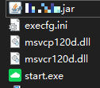
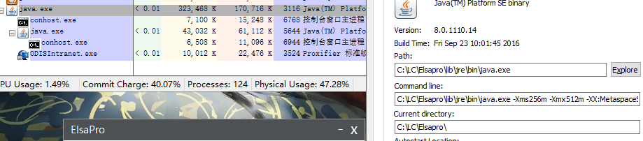
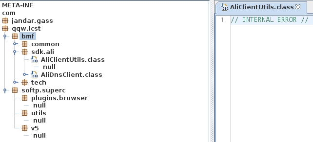
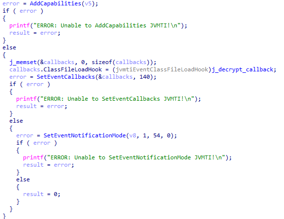
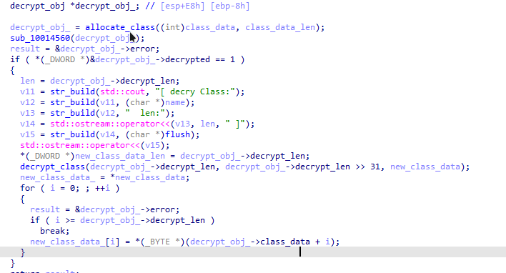
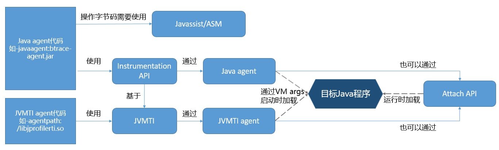
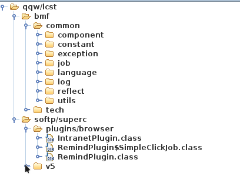
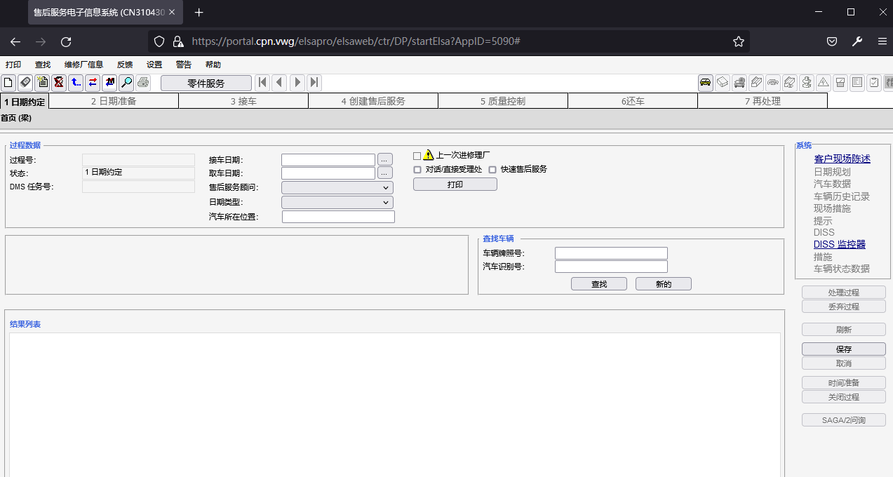

JVMTI加密保护绕过
研究过程
最近研究某汽车，遇到一个Win下的软件，用于连接经销商内网。
安装完成，目录有jar文件又有exe文件。

执行start.exe之后可以看到启动了两个Java进程

1 | C:\LC\Elsapro\lib\jre\bin\java.exe -agentlib:C:\LC\Elsapro\lib\jna\jvmprotect -Djava.library.path=C:\LC\Elsapro\lib\jna -Dfile.encoding=utf-8 -classpath C:\LC\Elsapro -cp C:\LC\Elsapro\ElsaPro.jar com.qqw.lcst.softp.superc.v5.app.epweb.gui.OptGui |
猜测第二个进程可能是内置浏览器，第一个进程是关键进程
使用jdgui打开，发现部分类显示Internel Error，并且关键类没有显示。使用其他java反编译工具也一样。

简单逆向start.exe文件，发现只是用作ClassLoader，可能用于在线更新。
在启动参数看到了agentlib指向jvmprotect，使用IDA Pro打开jvmprotect，发现使用了JVMTI作为agent，猜测可能作为解密模块。
JVMTI支持包括但不限于取证，调试，监控，线程分析，覆盖率分析等工具。
简单查阅JVMTI文档，得知如下三个主要方法，可以作为逆向切入点
- Agent_OnLoad 启动时调用
- Agent_OnAttach 附加时调用
- Agent_OnUnload 卸载时调用
使用IDA Pro打开这个agent。得知Agent_OnLoad是启动函数，由于代码基于JNI和JVMTI，打开阅读不太方便。我整合了一个jvmti_all.h头文件，方便逆向。（由于这个回调函数太简单，并且没有用到其他功能，所以没有派上什么用场）。

启动时设置SetEventCallbacks，此时会把jar包的class文件逐个传入这个回调函数。然后把每个类解密，并且输出日志。

我很懒，不想还原算法，打算用frida或者unicorn engine去解密。
阅读完这篇文章 Yilun Fan - 谈谈Java Intrumentation和相关应用，发现Instrumentation API基于JVMTI，因此可以使用Java Agent来导出class文件

参考等你归去来 - 如何获取java运行时动态生成的class文件？，我打包了名为ClazzDumpAgent.jar的Agent。d参数代表dump路径，-f参数是匹配提取的前缀，-r文件代表包名。
agentlib和javaagent存在先后顺序，一定要先解密完再导出。
1 | C:\LC\Elsapro\lib\jre\bin\java.exe -Xms256m -Xmx512m -XX:MetaspaceSize=256m -XX:MaxMetaspaceSize=512m -agentlib:C:\LC\Elsapro\lib\jna\JvmtiCry -Djava.library.path=C:\LC\Elsapro\lib\jna -javaagent:C:\LC\Elsapro\ClazzDumpAgent.jar=-d=C:\LC\Elsapro\clazzDump\;-f=com/qqw/lcst;-r=lcst -Dfile.encoding=utf-8 -classpath C:\LC\Elsapro -cp C:\LC\Elsapro\ElsaPro.jar com.qqw.lcst.softp.superc.v5.app.epweb.gui.OptGui |
执行这段脚本，可以看到解密完每个class之后，都会导出这个class。
随后将路径打包成zip文件，用 Java 反编译软件打开，相比较第一张图，可以看到之前显示为null的class已经出现率，但是有些显示Internal Error的类没有出现。这是因为没有执行的class不会被解密，这时候主动触发这个功能，在命令行可以看到相关的类被实时解密。

建议用CFR去反编译，报错更少。
1 | cfrd -jar ./decypted.zip ./out |
彩蛋
